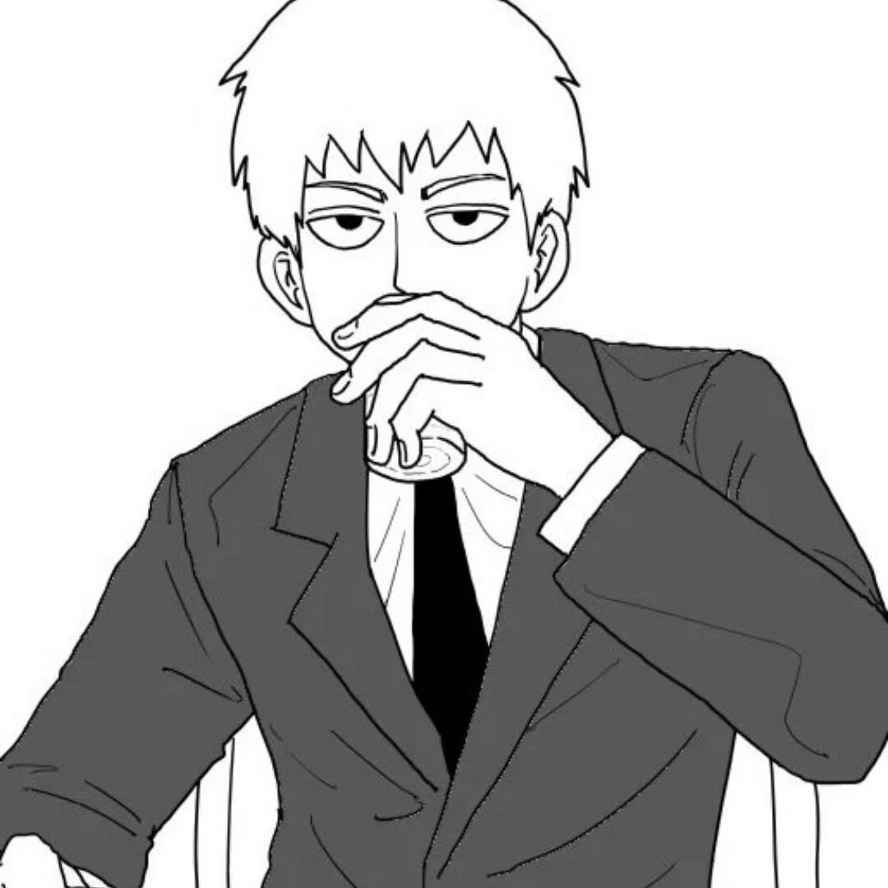
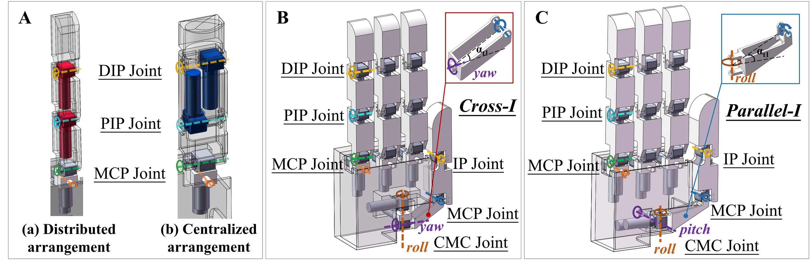

Yanyi Wang
Hi, I am Yanyi Wang. I am currently a junior at Shenzhen Technology University, majoring in Electronic Science and Technology. Through years of competing in robotics challenges, I have cultivated deep expertise in real-world robots.
Currently, my research is focused on the fields of dexterous hands and robotic tactile sensing.
Email
Github


A Two-Stage Optimization Framework for Designing Direct-Drive Dexterous Robotic Hands
Yanyi Wang, Zhenyuan Zhang, Mingqi Chen, Junjie Long, Jingke Lyu, Zhanat Kappassov, Yinggang Li, and Qiang Li*
20th IEEE International Conference on Control and Automation (ICCA), 2026
I joined the Autobots team in my freshman year, where I gained foundational expertise in navigation and control. After competing in various team events as a core member in the 2024 season, I stepped up as the Team Captain for the 2025 season.
During my tenure, our team proudly secured 6 national-level and 12 provincial-level awards. I am deeply grateful for the hard work and dedication of all my teammates—none of this would have been possible without them.
OnSite Autonomous Driving Algorithm Challenge
National 5th Place (Season 2 Playoffs) | Regional 6th Place (Season 3 Playoffs)
This challenge evaluates the adaptability and stability of autonomous driving planning and control algorithms, requiring smooth sim-to-real transfer and real-car tests involving dynamic obstacle avoidance and traffic rule compliance.
The 20th National College Student Intelligent Vehicle Competition - Smart Life Challenge
National First Prize (10th Overall in Finals)
Set in a "Smart Life" scenario, this event requires building a fully autonomous pipeline integrating ROS and Gazebo. Key tasks included intelligent voice interaction, computer vision-based recognition, cargo picking, and autonomous navigation with dynamic obstacle avoidance.
The 19th National College Student Intelligent Vehicle Competition (Outdoor ROS Unmanned Vehicle Race)
National Third Prize
This competition tasks autonomous vehicles with a two-lap outdoor course. We utilized SLAM and sensor fusion to map the environment and identify obstacles in the first lap, followed by map-based autonomous navigation, traffic light detection, and precise parking in the second lap.